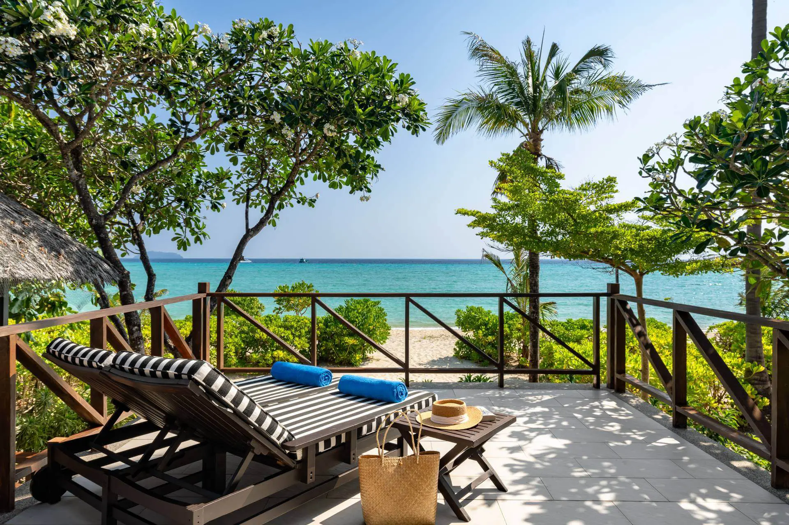
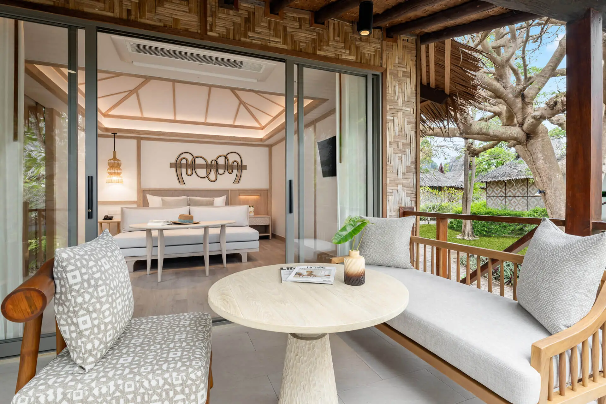
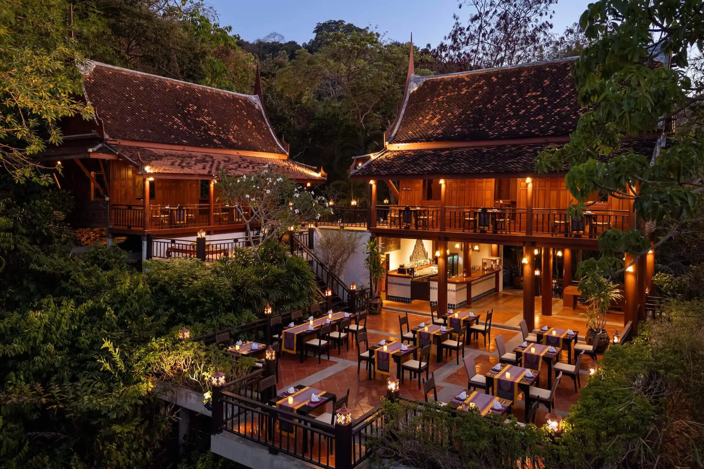
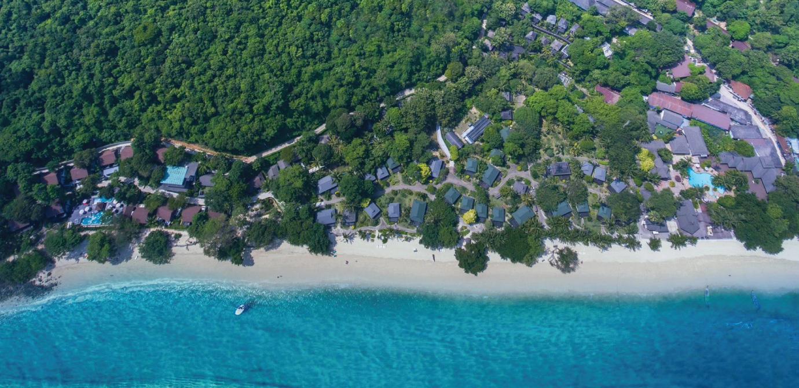
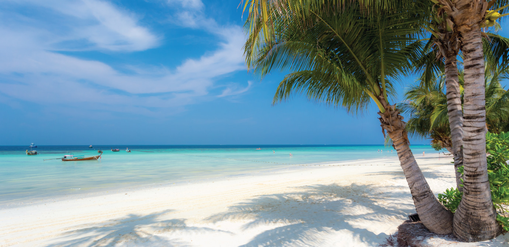
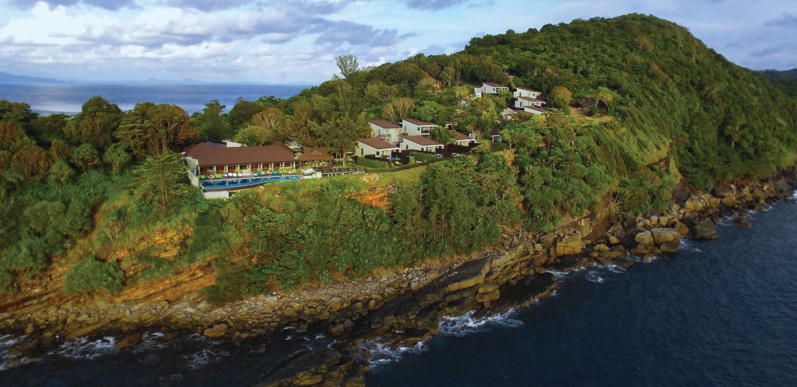
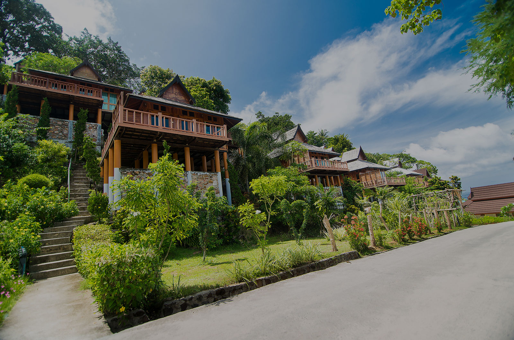
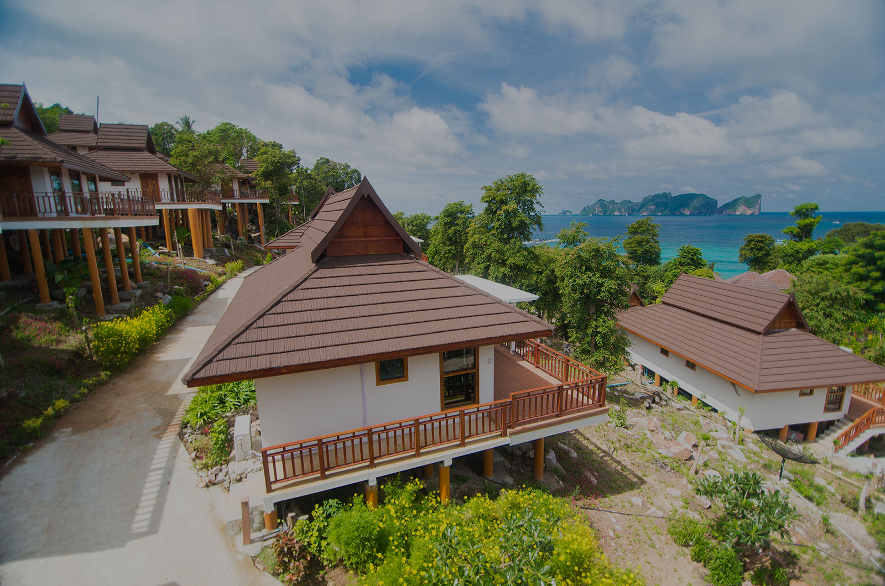

Laem Tong
Roligere strand og resortliv nord på øya.
Koh Phi Phi er mer enn en dagstur. Velger du riktig område får du rolige strandmorgener, snorkling og utsikt før dagsturene kommer inn.
Velg base etter reisestil før du velger hotell. Det gjør dagene enklere og reduserer unødvendig transport.
Roligere strand og resortliv nord på øya.
Fin balanse mellom strand og tilgang til Tonsai.
Mest liv, restauranter og enkel ankomst.
Velg Long Beach eller Laem Tong når du reiser med barn.
Bestill transport til resortet før ankomst.
Start båtturen tidlig for roligere bukter.
Hvert hotell er presentert med ekte bilder hentet fra hotellets egen nettside. Sjekk alltid pris og tilgjengelighet hos hotellpartneren.




Strandresort. Et tydelig hotellvalg for familie og resort.




Rolig feriebase. Et tydelig hotellvalg for familie og strand.



Strand og utsikt. Et tydelig hotellvalg for par og utsikt.
Størst utvalg av restauranter og uformelt kveldsliv.
Små butikker, strandutstyr og enkel kveldspromenade.
Velg lokale markeder, småbutikker og en rolig kveld fremfor å fylle hele dagen med transport.
Finn en opplevelse som passer tempoet ditt i Koh Phi Phi. Sammenlign tidspunkt og vilkår før bestilling.
Se aktiviteter hos Klook →Finn en opplevelse som passer tempoet ditt i Koh Phi Phi. Sammenlign tidspunkt og vilkår før bestilling.
Se aktiviteter hos Klook →Finn en opplevelse som passer tempoet ditt i Koh Phi Phi. Sammenlign tidspunkt og vilkår før bestilling.
Se aktiviteter hos Klook →